外国人材が日本の技術・文化・企業・地域を体験し、自国で事業・雇用・交流・貿易へ展開する来日研修プログラムです。
研修・連携を相談する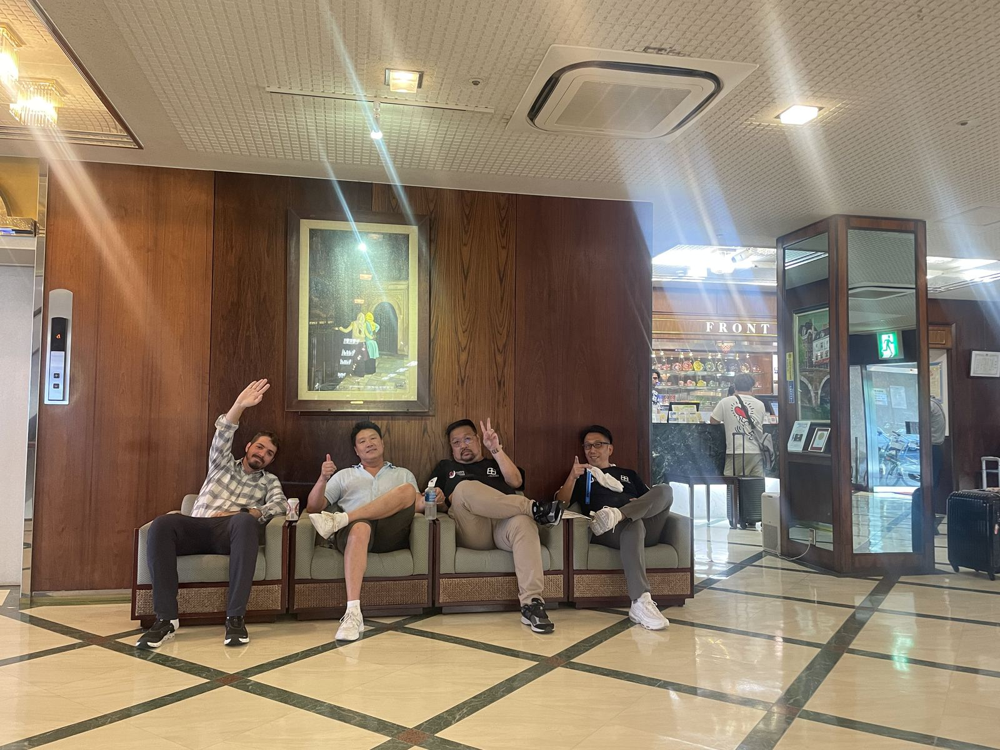
観光地を巡るのではなく、一次産業・伝統工芸・郷土料理などの現場に入り込み、日本の「本質」に触れる体験型プログラムです。海外の富裕層・文化愛好層、企業の来日研修を主な対象としています（熊本編）。
神社仏閣、庭園、老舗旅館など、地域の歴史と文化に触れる時間を組み込みます。
酒蔵、水産加工場など一次産業・ものづくりの現場に入り込み、つくり手から直接学びます。
地元の食材・郷土料理を囲む食事を通じて、土地の暮らしと文化を体感します。
帰国後、自国での事業・雇用・交流・貿易への展開までを見据えて設計します。
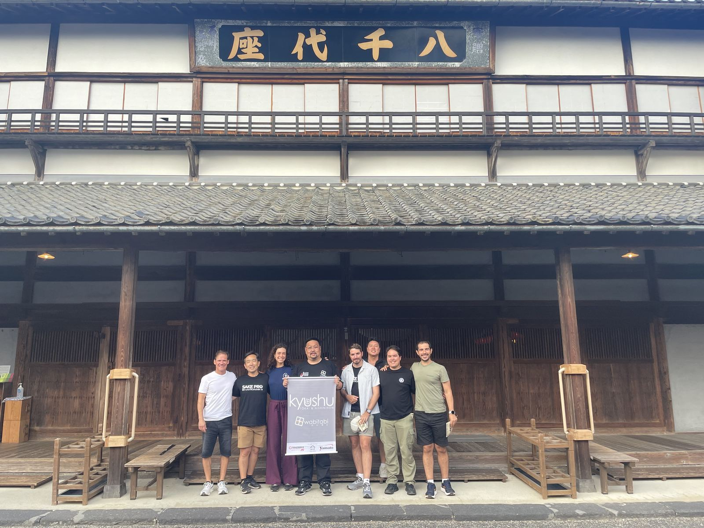
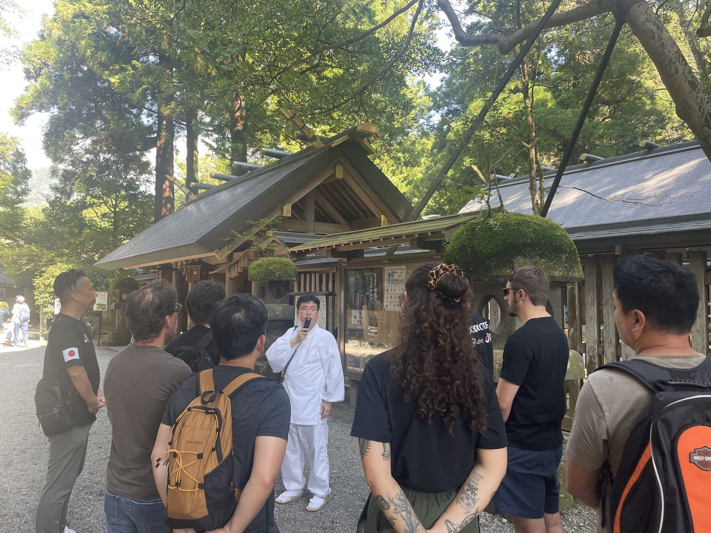
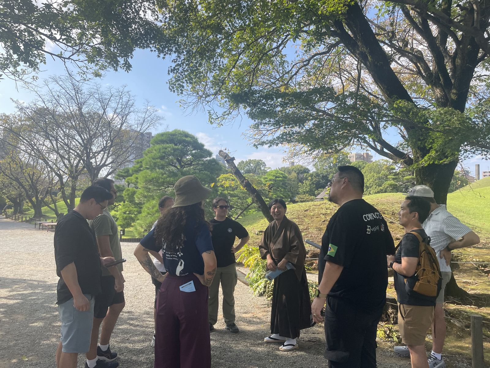
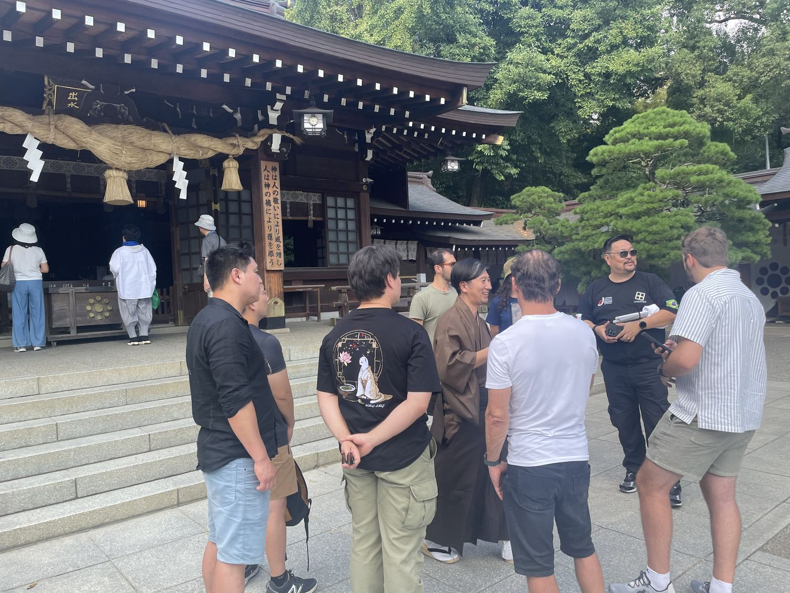
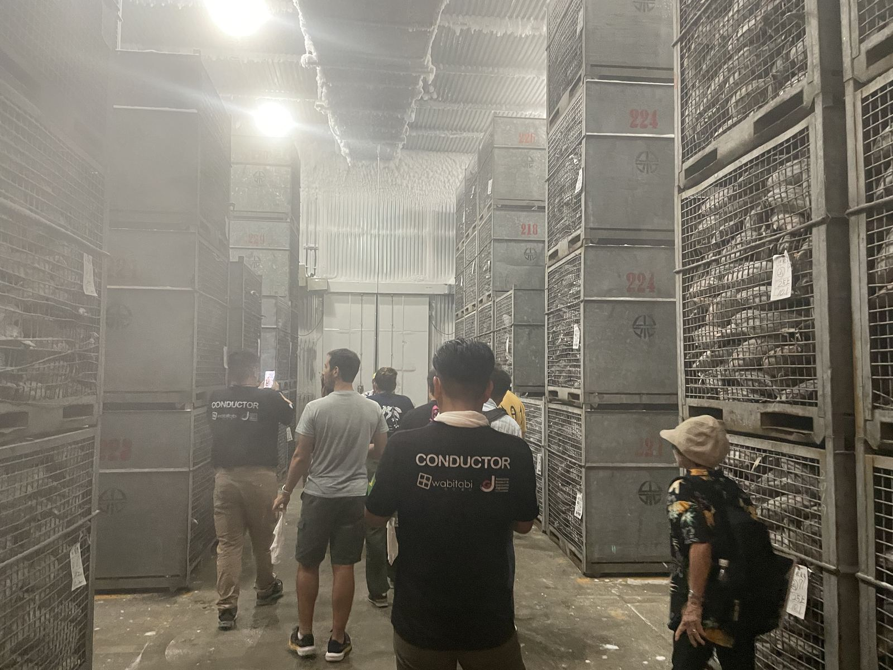
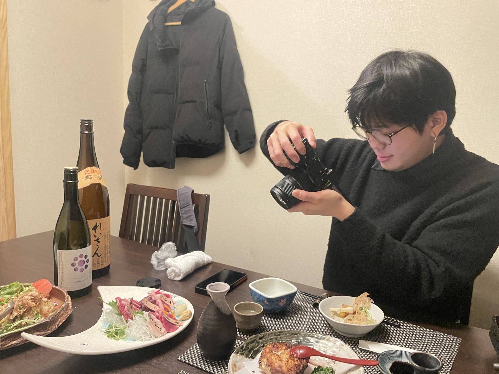
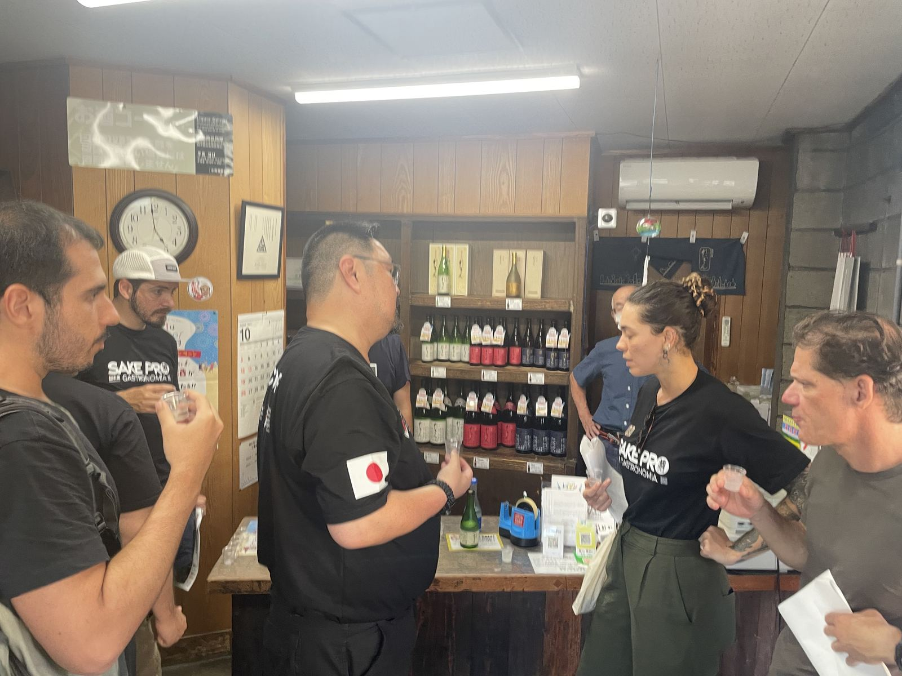
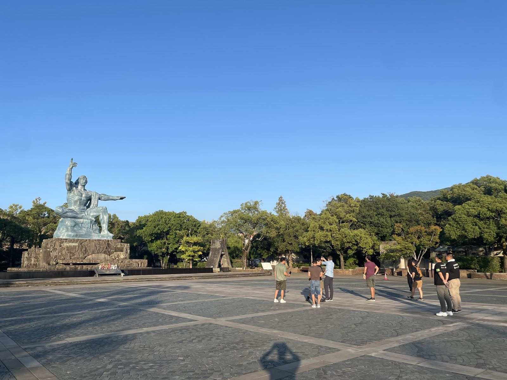
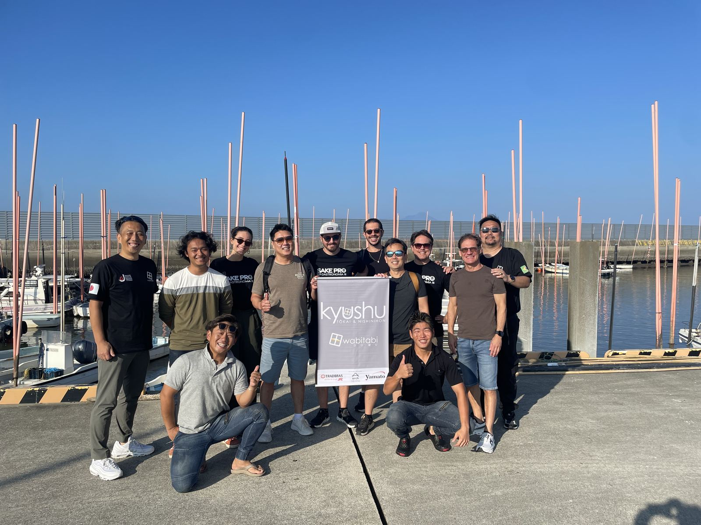
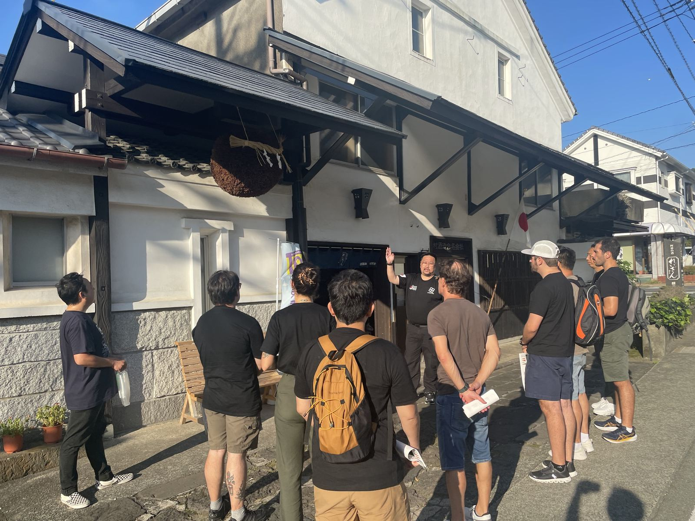
対象、予算、時期が未定でも構いません。現在分かっていることと、まだ決まっていないことを整理します。
研修・連携を相談する